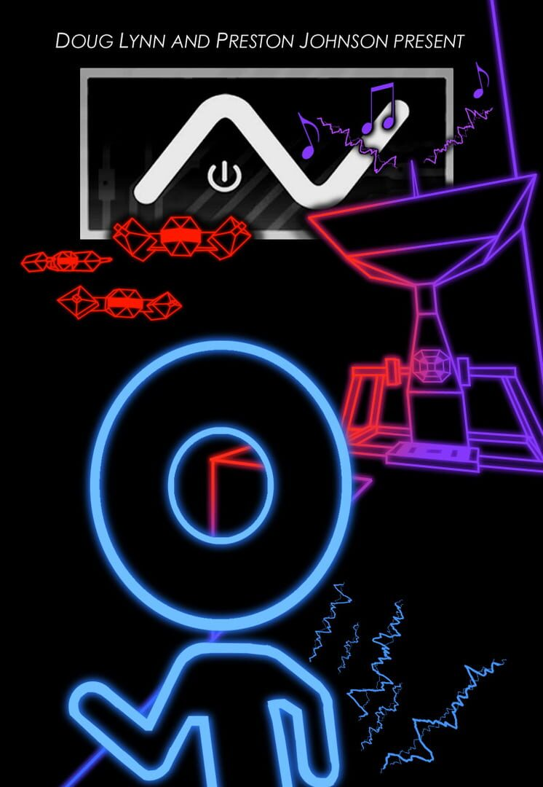

A.V.
A.V.
Details
|  | |
| Playtime | Not Played |
| Last Activity | Never |
| Added | 15/04/2020 |
| Modified | Never |
| Completion Status | Not Played |
| Source | Steam |
| Platform | PC |
| Release Date | 13/02/2015 |
| Community Score | 54 |
| Critic Score | |
| User Score | |
| Genre | Adventure Indie |
| Developer | FirstForever Studios |
| Publisher | MAGIC Spell Studios |
| Feature | Achievements Captions Available Full Controller Support Single Player |
| Links | PCGamingWiki Community Hub Discussions Guides Achievements Store Page News |
Description
A.V. follows the adventure of a sentient music program living in a computer system – a program seeking to learn more about itself and its world. But since our hero was only programmed to understand sound, that’s the only way he can interact with his environment. Each sound you generate can be seen as a pulse of light, and it’s this mechanic that serves as your primary tool for navigating A.V.’s open world. To help you along, a set of musical instrument algorithms allow for different types of interaction with the world, letting you open access to new areas. In the midst of this adventure, though, there’s a catch. The computer you inhabit isn’t all that happy with your newfound sense of self-awareness, and has sent a load of antivirus programs into the system to stop you. Make too much noise, and you’ll draw their attention. Try to stay out of sight well enough to make your escape!
A.V.’s presentation is centered around a quirky and engaging sensory experience. The entire world follows a rhythm, and electronic music is coupled with colorful, pulsing lights to place you into a world where sound represents your whole existence. The game’s open-world design encourages you to choose your own path and your own play style – multiple ending sequences await depending on what technique you ultimately choose. So throw on some headphones, join the experience, and dive into the world of A.V. – a world that puts the “rhythm” in “algorithm”.
Hmm…that doesn’t really work unless you say it, does it?
Key Features:
A.V.’s presentation is centered around a quirky and engaging sensory experience. The entire world follows a rhythm, and electronic music is coupled with colorful, pulsing lights to place you into a world where sound represents your whole existence. The game’s open-world design encourages you to choose your own path and your own play style – multiple ending sequences await depending on what technique you ultimately choose. So throw on some headphones, join the experience, and dive into the world of A.V. – a world that puts the “rhythm” in “algorithm”.
Hmm…that doesn’t really work unless you say it, does it?
Key Features:
- Unique Sensory Experience
- "Sound To Light" mechanics mixed with outlined visual look provides a unique visual and audio experience.
- Perfect blend of light and sound.
- Winner of RPI GameFest 2014 Best Sensory Experience Award - Quirky Yet Riveting Narrative Line
- Windows, Mac, or Linux Platforms
- Oculus VR Support
- Controller Support - Relax on the couch as you explore
- Large Open Levels to Explore
- Path Dependent Endings
- 7 Unique Puzzle Instruments/Tools
- Steam Cloud Saves & Achievements
- 8 Types of Anti-Virus drones trying to end your exploration
- Assemble musical tracks into a master tune